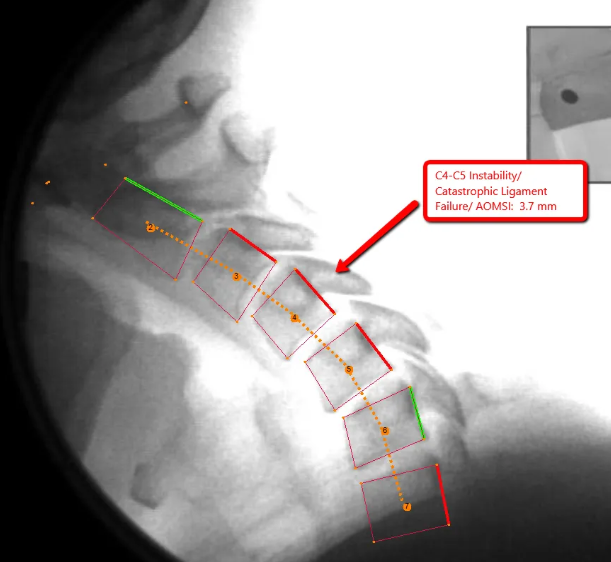
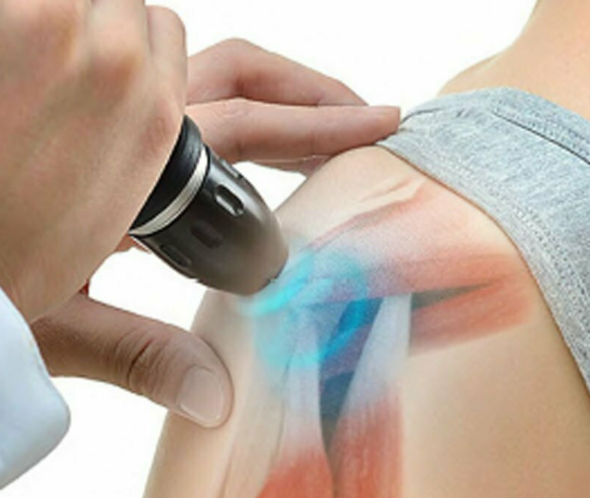
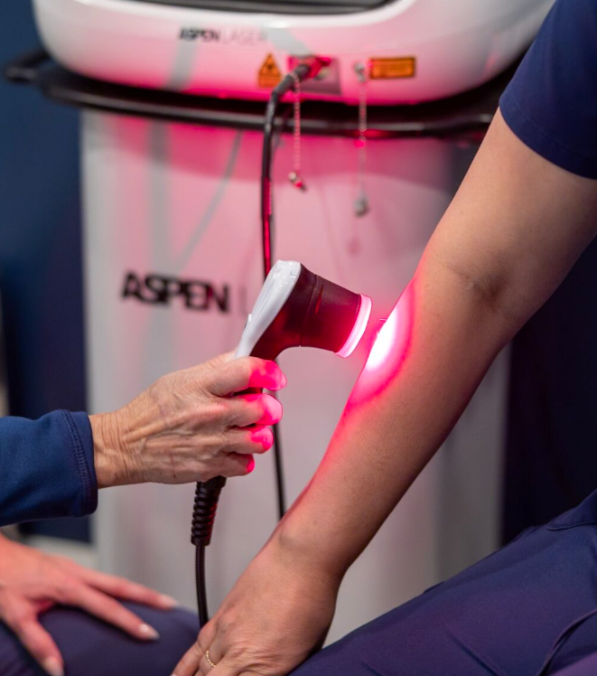
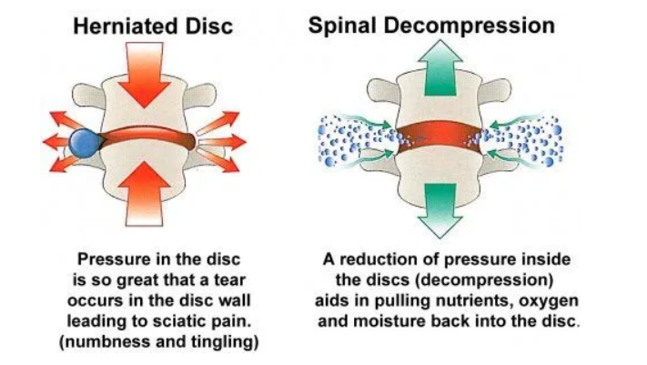
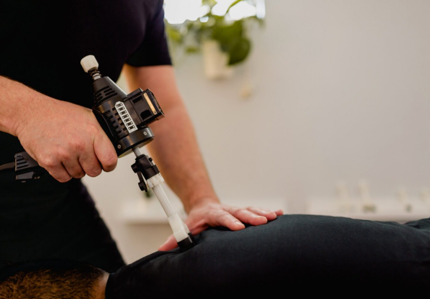
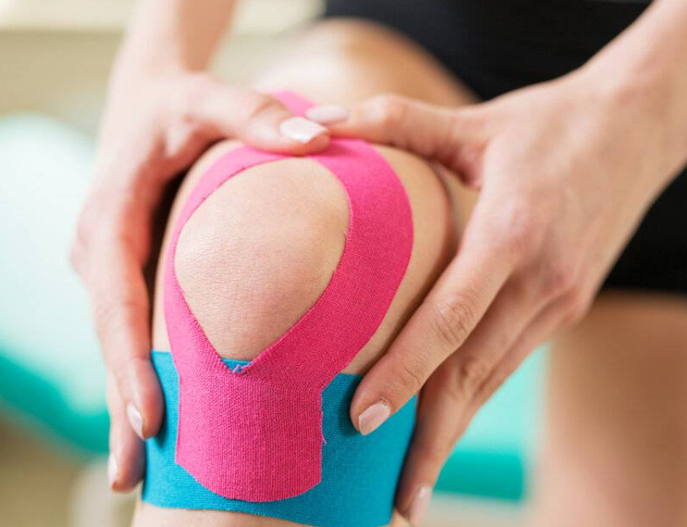
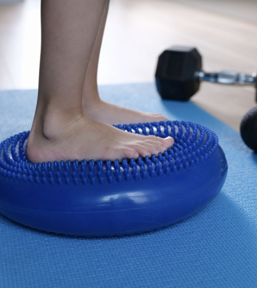
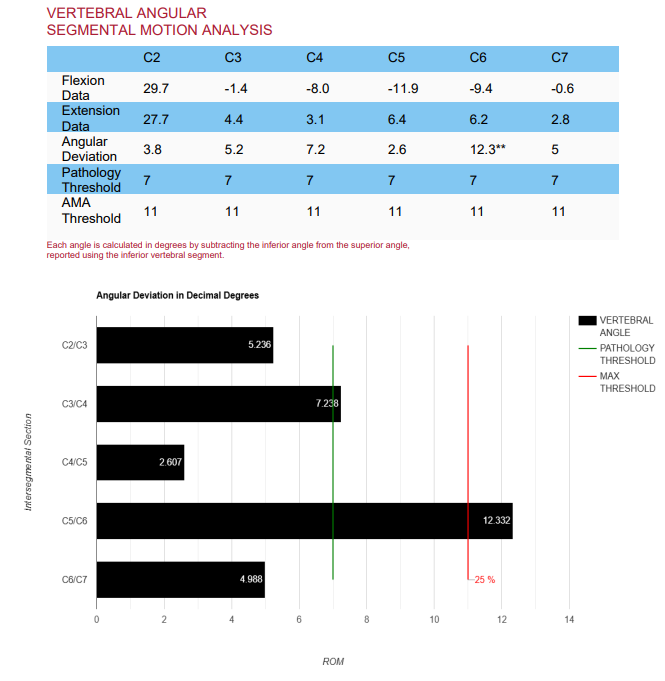

Optimum Chiropractic Care · Mobile, AL
Advanced diagnostic and therapeutic capabilities under one roof — from Mobile's only Digital Motion X-Ray to shockwave and Class 4 laser therapy.
Digital Motion X-Ray (DMX) is a fluoroscopic imaging modality that captures real-time video of the cervical and lumbar spine during active range of motion. Unlike static radiographs, which record a single frozen moment, DMX reveals the dynamic relationship between vertebral segments — including translational and angular instabilities that are invisible on conventional film. Optimum Chiropractic Care houses the only DMX unit in the Mobile, Alabama area.
In the clinical setting, DMX is invaluable for identifying ligamentous laxity following whiplash and trauma injuries. When spinal ligaments are stretched or torn, the facet capsules and intervertebral discs lose their stabilizing function, and the resulting abnormal intersegmental motion is captured frame by frame during the examination. This objective finding is documented against established normative values and AMA Guides criteria.
DMX studies are also highly relevant in medicolegal contexts, providing the kind of motion-based evidence that static imaging cannot offer. The examination is low-radiation and tolerated well by post-trauma patients. Reports include annotated video stills and quantitative measurements of segmental displacement.

Extracorporeal shockwave therapy (ESWT) delivers high-energy acoustic pressure waves into targeted musculoskeletal tissue. The Duolith SD1 Ultra — a premium Swiss-engineered platform — provides both focused and radial delivery modes, allowing clinically specific treatment across a wide range of presentations. Radial waves treat large surface areas such as the iliotibial band and thoracolumbar fascia, while focused waves penetrate precisely to deeper structures including the enthesis and calcific deposits.
The biological mechanisms of ESWT include cavitation-induced microtrauma that triggers neovascularization, stimulation of tenocyte proliferation and collagen synthesis, disruption of calcific deposits in the supraspinatus and Achilles tendons, and inhibition of substance P to reduce local pain signaling. Clinical applications include chronic Achilles and patellar tendinopathy, plantar fasciitis with heel spur, rotator cuff calcific tendinitis, lateral epicondylitis, trochanteric bursopathy, and myofascial trigger point inactivation.
Shockwave therapy is administered in short sessions of approximately 15–20 minutes, typically over a course of three to five treatments spaced one week apart. It is especially well-suited for patients who have not responded to conservative care and wish to avoid corticosteroid injection or surgical intervention.

Class 4 laser therapy uses concentrated near-infrared and visible-red photons delivered at therapeutic power levels to penetrate skin, subcutaneous fat, and deep musculature. The Aspen system operates within wavelengths studied for their effect on cytochrome c oxidase in the mitochondrial electron transport chain — triggering a cascade of cellular repair processes including increased ATP production, modulation of reactive oxygen species, and upregulation of growth factors such as VEGF and TGF-β.
The clinical result is a combination of analgesic, anti-inflammatory, and tissue-regenerative effects. Acute applications include reduction of post-traumatic edema, pain modulation in the acute phase of whiplash-associated disorders, and acceleration of tissue healing after soft tissue injury. Chronic applications include management of osteoarthritic joint pain, myofascial pain syndrome, disc herniations with radiculopathy, and peripheral neuropathic pain.
Treatment is non-invasive, painless (patients often perceive only a gentle warmth), and completed in 8–12 minutes per area. Class 4 laser delivers significantly higher power densities than Class 3B devices, enabling deeper tissue penetration and greater photon dose delivery in shorter session durations.

Computerized spinal decompression therapy uses a motorized traction table to apply carefully calibrated distraction forces across targeted spinal segments. By cycling between tension and relaxation phases, the treatment creates negative intradiscal pressure — a physiological environment that facilitates the retraction or repositioning of herniated nuclear material and promotes the diffusion of oxygen, nutrients, and fluids back into dehydrated and degenerated discs.
Clinical indications include disc herniations at cervical and lumbar levels, degenerative disc disease with or without radiculopathy, foraminal stenosis producing extremity symptoms, and posterior facet syndrome. Unlike passive traction, computerized decompression monitors patient resistance and adjusts the force curve dynamically, preventing the protective muscle guarding that limits the efficacy of traditional traction. Treatment protocols are individualized based on the segmental level involved, disc morphology on MRI, and the patient's symptom pattern.
A standard course involves 15–20 sessions of approximately 25–30 minutes each. The procedure is non-invasive, performed in the supine position, and typically well-tolerated. Dr. Moore coordinates decompression care with Class 4 laser and manual therapy to address periarticular soft tissue changes alongside the disc-level intervention.

The ArthroStim is a precision chiropractic instrument that delivers a high-velocity, low-amplitude (HVLA) thrust at a controlled frequency of approximately 12 impulses per second. The rapid oscillation stimulates the joint mechanoreceptors and proprioceptive afferents — including Ruffini endings, Golgi tendon organs, and muscle spindle fibers — at a rate that facilitates neurological reset without the large force amplitude of a manual cavitation adjustment.
This makes the ArthroStim particularly well-suited for post-trauma patients, elderly patients with reduced bone density, or anyone who is apprehensive about audible manipulative techniques. The impulse frequency falls within the range most effective for stimulating joint afferent input and modulating the dorsal horn pain processing that contributes to central sensitization — a common complication in chronic whiplash-associated disorder.
The device's design allows precise application to individual spinal segments and extremity joints. It is equally effective on the cervical spine — where patient tolerance and physician confidence are paramount following acute trauma — and on peripheral joints including the wrist, ankle, and temporomandibular joint.

Manual chiropractic manipulation — commonly referred to as a chiropractic adjustment — applies a precisely controlled, short-lever HVLA thrust to a restricted or hypomobile spinal or extremity joint. The goal is to restore normal joint arthrokinematics, reduce pain, and normalize afferent input from joint mechanoreceptors that modulates neuromuscular function throughout the kinetic chain. The characteristic audible "pop" that sometimes accompanies an adjustment reflects tribonucleation — the formation and rapid collapse of a gas bubble within the synovial fluid, not bone cracking.
Dr. Moore's adjustive approach is grounded in evidence-based biomechanical analysis. Each adjustment is preceded by motion palpation, orthopedic and neurological assessment, and in many cases static and dynamic radiographic evaluation. Treatment is never formulaic — the technique, position, and force vector are individualized to the patient's segmental findings and clinical presentation. Cervical, thoracic, lumbar, sacroiliac, and extremity adjustments are performed as clinically indicated.
Manual adjusting is integrated with instrument-assisted techniques, soft tissue mobilization, and rehabilitative exercise in a multimodal treatment model that addresses both the passive and active stabilizing systems of the spine.
Kinesiology tape is an elastic therapeutic tape applied to the skin overlying muscles, tendons, and fascia to influence the underlying soft tissues and neurosensory systems. Unlike rigid athletic tape that immobilizes a joint, kinesiology tape is designed to allow full range of motion while providing continuous proprioceptive and mechanoreceptive input to the central nervous system throughout movement. The tape's elasticity creates a gentle lifting effect on the skin, which is theorized to decompress subcutaneous tissues and facilitate lymphatic drainage in acute post-traumatic edema.
Clinical applications at Optimum Chiropractic Care include cervical postural facilitation following whiplash injury, shoulder girdle support during rehabilitation after rotator cuff strain, lumbar stabilization during early-phase exercise progression, and extremity taping for ankle, knee, and wrist instability. Taping technique is selected based on the desired physiological mechanism: muscle facilitation or inhibition, fascial correction, lymphatic decongestion, or joint decompression.
Kinesiology tape is used as an adjunct to, not a replacement for, active rehabilitation. Dr. Moore prescribes specific taping applications as part of each patient's individualized home management plan between treatment sessions.

Therapeutic exercise and functional rehabilitation form the active stabilization component of care at Optimum Chiropractic Care. Passive treatments — adjustments, laser, shockwave, decompression — address the joint mechanics and tissue-level pathology; rehabilitation addresses the neuromuscular deficits, strength imbalances, and movement pattern dysfunctions that perpetuate injury and delay recovery if left unaddressed.
Dr. Moore designs injury-specific rehabilitation protocols that progress through defined phases: initial pain management and range-of-motion restoration; intermediate strengthening of deep stabilizers (multifidus, transverse abdominis, rotator cuff); and functional integration with proprioceptive training, neuromuscular re-education, and activity-specific movement patterns. Programs are adapted for post-traumatic patients recovering from motor vehicle injuries as well as for patients managing degenerative conditions, disc injuries, and repetitive strain disorders.
Exercises are taught in-office with proper technique instruction and home programming provided via written protocol sheets. Compliance with the active care component is correlated with outcomes: patients who engage consistently with their rehabilitation protocols demonstrate more durable resolution of symptoms and reduced recurrence rates compared to those who rely on passive care alone.

X-ray digitization is a computerized radiographic mensuration methodology that uses specialized software to precisely measure vertebral body angles, translational displacements, and intervertebral relationships from digitized plain-film or digital radiographs. When applied to lateral flexion-extension stress views of the cervical or lumbar spine, these measurements allow for quantification of abnormal intersegmental motion — data that forms the basis of Alteration of Motion Segment Integrity (AOMSI) determinations under the American Medical Association Guides to the Evaluation of Permanent Impairment, 5th edition.
AOMSI findings are clinically significant because ligamentous laxity — the structural basis of chronic instability following whiplash injury — is not visible on static imaging and is not captured by standard outcome measures. Computerized mensuration produces objective, reproducible measurements, with the methodology documented so that other examiners can review it. Dr. Moore holds specialized training in X-ray digitization methodology and prepares detailed AOMSI reports documenting measured values against normative data tables, identifying any motion segments that meet the AMA Guides threshold for whole-person impairment.
These reports are prepared for treating physicians, independent medical examiners, and attorneys requiring objective documentation of ligament injury severity. Dr. Moore is available as a third-party examiner for cases where the treating chiropractor cannot serve in that role. Reports include raw mensuration data, methodology documentation, normative reference comparison, and a clearly stated impairment rating conclusion.

Dr. Moore and his team are accepting new patients. Call the office directly or submit a new patient inquiry online.
Request an Appointment